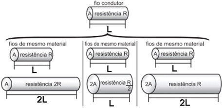

• resistência (R) e comprimento (ℓ), dada a mesma secção transversal (A);
• resistência (R), e área da secção transversal (A), dado o mesmo comprimento (ℓ);
• comprimento (ℓ) e área da secção transversal (A), dada a mesma resistência (R).
Considerando os resistores como fios, pode-se exemplificar o estudo das grandezas que influem na resistência elétrica utilizando as figuras seguintes:

As figuras mostram que as proporcionalidades existentes entre resistência (R) e comprimento (ℓ), resistência (R) e área da secção transversal (A), e entre comprimento (ℓ) e área da secção transversal (A) são, respectivamente,
|
a) direta, direta e direta. b) direta, direta e inversa. |
c) direta, inversa e direta. d) inversa, direta e direta. |
e) inversa, direta e inversa. |
I. O fio de RA tem resistividade 1,0·10–6 Ω·m e diâmetro de 0,50 mm.
II. O fio de RB tem resistividade 1,2·10–6 Ω·m e diâmetro de 0,50 mm.
III. O fio de RC tem resistividade 1,5·10–6 Ω·m e diâmetro de 0,40 mm.
Pode-se afirmar que:
|
a) RA > RB > RC. b) RB > RA > RC. |
c) RB > RC > RA. d) RC > RA > RB. |
e) RC > RB > RA. |
|
a) 0,25. b) 0,50. |
c) 0,75. d) 1,25. |
e) 1,50. |
|
a) 1/2. b) 1/8. |
c) 1/4. d) 7/8. |
e) 1. |
|
a) 1,05 X 102. b) 2,05 X 10-2. |
c) 1,05 X 10-2. d) 1,05 X 102. |
e) 1,05 X 102. |